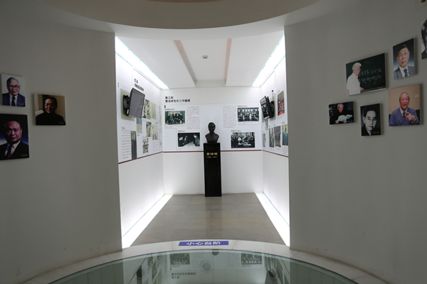

雷洁琼铜像和生平事迹展
雷洁琼铜像和生平事迹展厅位于上海理工大学校史馆内（军工路516号校区图文信息中心一楼），校史馆于2006年10月24日百年校庆时建成开馆。雷洁琼1941至1945年曾在沪江大学（上海理工大学前身）任教，并任社会系代理主任。为纪念雷洁琼先生，民进上海市委与上海理工大学于2016年10月26日在校史馆内共同策划筹建了雷洁琼铜像和雷洁琼生平事迹展厅，并挂牌成为上海民进会史教育基地。展厅内立有雷洁琼半身铜像，通过展板、电子屏专章介绍了雷洁琼参与发起民进成立和参与民进各项工作等有关生平介绍。成为上海民进各级组织学习民进会史和民进优良传统重要阵地之一。